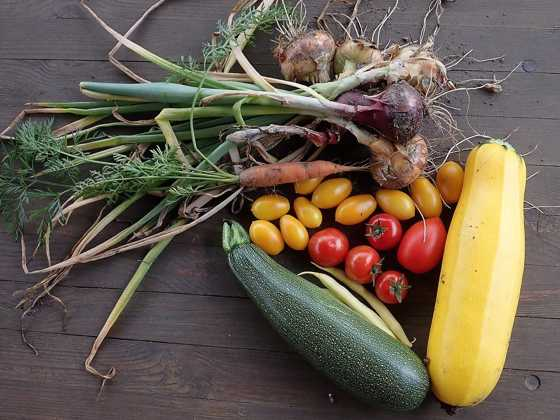
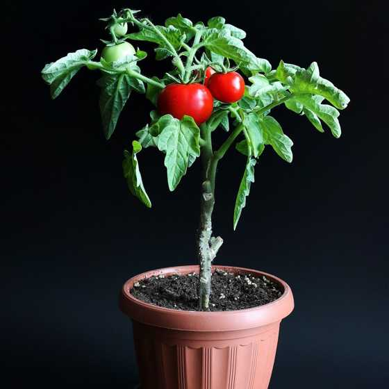
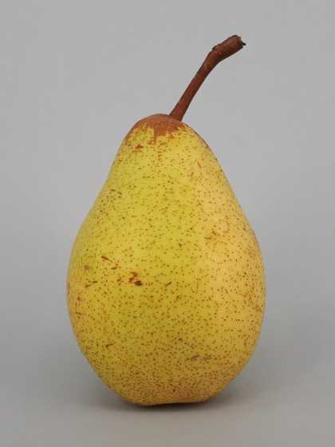
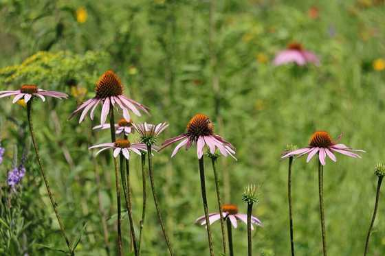
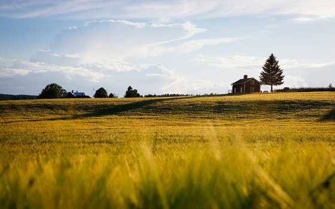
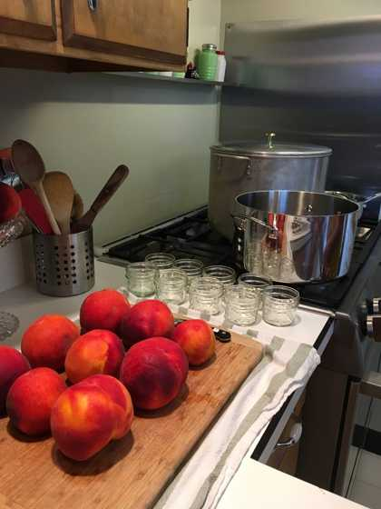
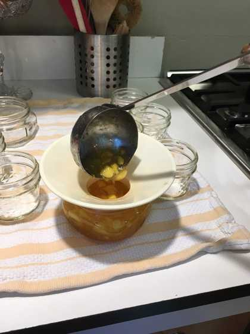
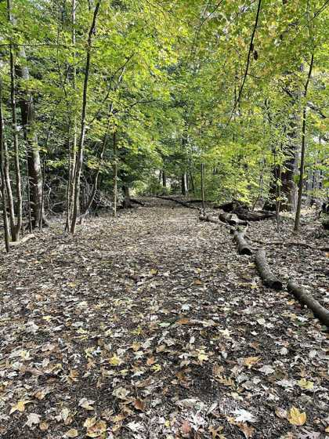
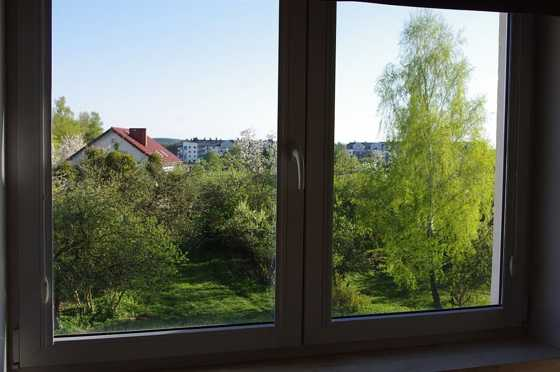

長崎県雲仙市愛野町 / cafe & farm
形がふぞろいでも、
畑のおいしさは、そのまま食卓へ。
comorebiは、畑で生まれる「隠れたフードロス」に光を当て、生産者の思いと一緒に手作りの味を届けるお店です。
お店の由来・想い
畑で見過ごされる野菜や果物に、居場所を。
長崎県の事業者データベースによると、comorebiは、生産者と話すなかで、傷や形の悪さを理由に捨てられてしまう野菜や果物があること(畑で生まれる「隠れたフードロス」)を知ったことが、事業のきっかけだとされています。そうした作物に価値を与えたい、という思いから始まりました。
地元の生産者から食材を直接仕入れ、生産者の人柄や環境、こだわりを把握したうえで、その思いと一緒に商品を届けることを目指しています。カットから調理まで加工はすべて手作りで、保存料や着色料は使用しないとされています。
2022年10月23日に雲仙市愛野町でオープンした「comorebi cafe & Farm」。愛野駅から歩いて数分の場所にあります。

情報源: 長崎県産品データベース / adthink(2022年12月の紹介記事) / Instagram
店名「comorebi」について、紹介記事では「使われずにいる作物に新しい居場所を、というコンセプトに合わせた名前」とされています。木々のあいだからこぼれる光のようなイメージは、制作側のイメージであり、お店の説明ではありません。上記の事実以外の言い回しは制作側の表現です。




メニュー・提供内容
手作りのホットサンドと、畑の加工品。
2022年12月の紹介記事に載っていた内容です。現在の提供内容・価格は変わっている可能性があるため、詳細は「準備中」としています。




営業時間・定休日: 準備中 / 電話: 準備中
口コミ
こんな声が聞こえてきそうです。
以下は制作側が作った「イメージ例」で、実在のお客様の声ではありません。
ホットサンドの具材にジャムまで手作りと聞いて、食べる前から楽しみになりました。
駅から近く、散歩のついでに立ち寄れました。お土産のジャムを選ぶ時間も楽しかったです。
畑の話を聞くと、野菜の見え方が少し変わりました。また来たいです。




アクセス
愛野駅から歩いて数分。
| 所在地 | 〒854-0301 長崎県雲仙市愛野町甲3994 |
|---|---|
| 電話 | 準備中 |
| 営業時間 | 準備中 |
| 定休日 | 準備中 |
| SNS | Instagram @comorebi_farm |
営業日は情報源によって異なり、変更されることがあります。最新情報はInstagramをご確認ください。